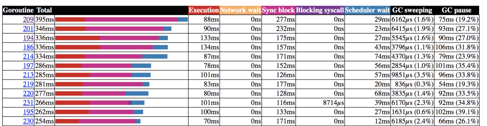

Go: 通过 GODEBUG 提升对协程的利用
Go 协程是轻量的，在很多场景能提升你的程序性能。不幸的是，如果使用不当，也可能降低你程序的性能，因为 Go 协程的上线文切换也需要消耗一定的资源。
项目上下文和测试基准
在我的公司—PropertyFinder—一个阿联酋的实业地产门户网站—我的团队维护一个微服务，用于为我们的客户和地产经纪人寻找潜在的机会。我们来通过一个算法 demo 概览下这个 Go 微服务：
Variables:
lead struct
Start:
// a profile of this lead is made based on its interest
MakeProfile(lead)
// we get all listing that are around of this kind of profile
listings <- GetListings()
For each chunk of 1000 in listings
Start goroutine
For each listing in chunk
score <- CalculateMatching(listing, lead)
Add the score to the bulk object
Bulk insert the 100 scores of the chunk
Stop
因为这里的 listings 可能达到 10k 以上，所以我们决定每 1000 个作为一个块，创建一个协程。下面是我们对计算过程跑的基准测试以及 10k 个匹配结果的记录：
name time/op
LeadMatchingGenerationFor10000Matches-4 626ms ± 6%
我们在计算部分再增加更多的协程。我们对代码作如下更改：
// we get all listing that are around of this kind of profile
listings <- GetListings()
For each chunk of 1000 in listings
Start goroutine
For each listing in chunk
Start goroutine
score <- CalculateMatching(listing, lead)
Add the score to the bulk object
Bulk insert the 1000 scores
我们再运行一次：
name time/op
LeadMatchingGenerationFor10000Matches-4 698ms ± 4%
比上次慢了 11%，但在预期内。实际上，分数计算部分是纯粹的数学计算，因此 Go 调度器在新的协程里并不能利用任何的停顿时间（如系统调用）。
如果你想了解更多关于 Go 调度器和协程上下文切换的知识，我强烈推荐你阅读 William Kennedy 写的 Go 调度之上下文切换。
上下文切换导致的协程等待
我们现在来分析 Go 调度器是怎么运行协程的。我们先来看我们的第一个算法，每 1000 个作为一个块，启动一个协程。打开 Go 调度器的 schedtrace 来运行基准：
GODEBUG=schedtrace=1 Go test ./... -run=^$ -bench=LeadMatchingGenerationFor10000Matches -benchtime=1ns
参数 schedtrace=1 会按毫秒打印 Go 调度器的调度事件。下面是之前处理器空闲时新起的协程的相关信息的一部分追踪信息：
gomaxprocs=2 idleprocs=1 runqueue=0 [0 0]
gomaxprocs=2 idleprocs=1 runqueue=0 [0 0]
gomaxprocs=2 idleprocs=1 runqueue=0 [0 0]
gomaxprocs=2 idleprocs=0 runqueue=1 [0 0]
gomaxprocs=2 idleprocs=2 runqueue=0 [0 0]
gomaxprocs=2 idleprocs=2 runqueue=0 [0 0]
gomaxprocs 表示可用的处理器的最大数，空闲线程数是 idleprocs，runqueue 表示等待被分配的协程数，中括号中的数表示每个处理器中等待执行的协程（[0 0]）。在 关于性能的 wiki 中你可以找到更多相关信息。
我们可以清晰地看到并没有充分利用协程。我们也可以看到我们的处理器不是一直在工作，进而可能会想我们是否应该增加更多的协程来充分利用那些空闲的资源。我们以同样的步骤来运行第二个算法，每个分数计算起一个协程。
gomaxprocs=2 idleprocs=0 runqueue=645 [116 186]
gomaxprocs=2 idleprocs=0 runqueue=514 [77 104]
gomaxprocs=2 idleprocs=0 runqueue=382 [57 64]
gomaxprocs=2 idleprocs=0 runqueue=124 [57 88]
gomaxprocs=2 idleprocs=0 runqueue=0 [28 17]
gomaxprocs=2 idleprocs=1 runqueue=0 [0 0]
现在我们看到全局和本地队列的协程栈，它使我们的处理器一直处于工作状态。然而，我们的处理器很快又空闲了。使用追踪器的额外功能能解释这个现象：

 我们可以看到，大部分协程在数据记录时都在等待服务返回的 response。我们的优化应该关注这个地方，充分利用这个等待时间。这就是我们以 1000 份文件为一束来创建协程进行记录的原因。
我们可以看到，大部分协程在数据记录时都在等待服务返回的 response。我们的优化应该关注这个地方，充分利用这个等待时间。这就是我们以 1000 份文件为一束来创建协程进行记录的原因。
我们也理解了，在计算过程中增加协程数只能增加对程序的压力而没有其他的收益。因为计算过程中在当前协程等待时，系统并没有足够的时间来运行另一个协程，所以切换到另一个协程所耗的时间仅仅是浪费而已。
更多关于协程
如果你想提升创建协程的方式，那么 Go 的调度器和并发是很重要的内容。Wiliam Kennedy 的 Go 的调度机制 可能是最好的在线资源之一，我强烈推荐。